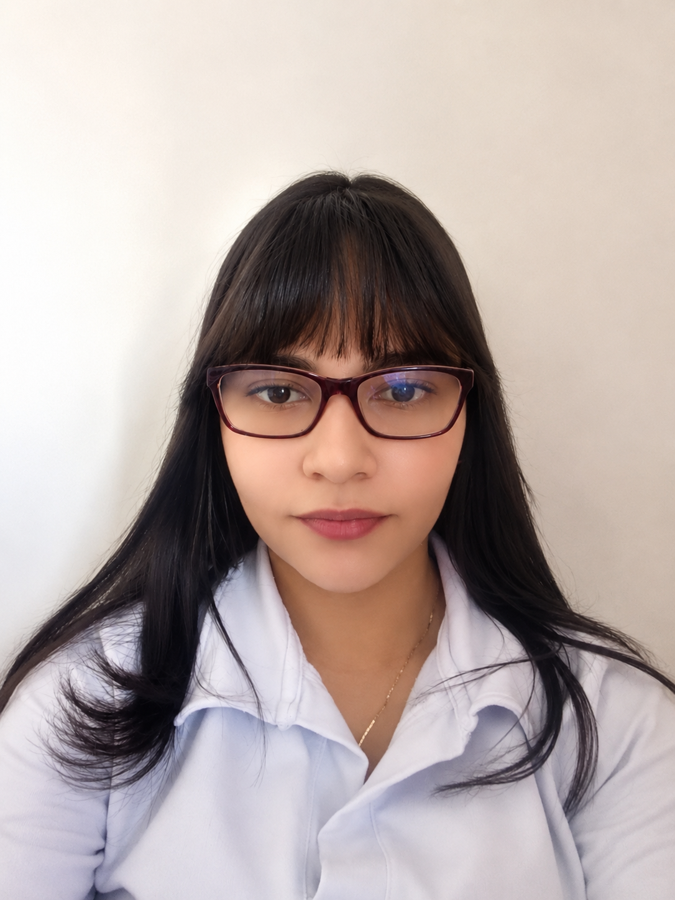

|

CONTACTO
Tel: 310 889 9033
Correo: karold-zunigam@unilibre.edu.co
Ciudad: Barranquilla, Colombia
HABILIDADES TÉCNICAS
- Java
- HTML
- SQL / MySQL
- Git / GitHub
- Visual Studio Code
- NetBeans
IDIOMAS
Español — Nativo
Inglés — B1
HABILIDADES PERSONALES
- Trabajo en equipo
- Comunicación
- Creatividad
- Organización
|
Karol Dayhana
Zuñiga Muñoz
Estudiante de Ingeniería de Sistemas
PERFIL PROFESIONAL
Estudiante de Ingeniería de Sistemas con interés en el desarrollo
de software, bases de datos, ciberseguridad y desarrollo de
videojuegos. Cuento con mayor fortaleza en el manejo y diseño
de bases de datos, además de conocimientos en programación y
herramientas de desarrollo.
Me caracterizo por ser una persona creativa, organizada y con
facilidad para trabajar en equipo. Mi objetivo a futuro es
trabajar en grandes compañías de tecnología y videojuegos,
mientras desarrollo los conocimientos y la experiencia
necesarios para crear mis propias empresas, una enfocada en
ciberseguridad y otra en el desarrollo de videojuegos.
FORMACIÓN ACADÉMICA
Ingeniería de Sistemas
Universidad Libre
6.º semestre | 2024 | Actualidad
PROYECTOS
Sistema de Interpretación de Lengua de Señas
Desarrollo de un sistema orientado a la interpretación de lengua
de señas, con el propósito de facilitar la comunicación entre
personas sordas y oyentes mediante el uso de herramientas
tecnológicas.
CERTIFICACIONES
AWS Academy Graduate - Cloud Foundations
Amazon Web Services Training and Certification
|